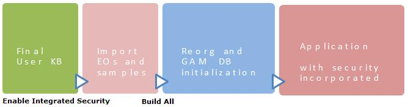

When you set the Enable Integrated Security Property for the first time in a knowledge base, the following happens: 1. GAM External objects are imported into the KB.External objects are used to access the GAM API and are consolidated in the GAM_Library folder. GAM Examples are consolidated in the GAM_Examples folder depending on the options selected during the GAM Activation Process. 2. A secondary data store is created for storing GAM information.This data store is called "GAM" and is created following these criteria: If the Reorg Data store is a SQLserver datastore, the default values for "GAM" data store are as follows:
The GAM repository will be located by default in the same database as the default database; however, the schema will be another one named "gam".
The GAM repository will be under a different database by default. 3. After pressing F5, a connection to the database is establishedAfter pressing F5, a connection is established to the database specified in GAM data store (using the connection properties of this data store: database name, user ID, user password), checking for the existence of some tables and GAM version. Given that these tables don't exist, the GAM database tables are created. So, the following happens:
 4. Metadata is initialized.Tables are populated with metadata. The GAM Manager Repository and the working Repository are created. Also, the administrator user and the connection user are created. The default GAM Security Policy is created, as well as the default AuthenticationType: GAM Local Authentication Type. The default GAM Roles are created. 5. Registration of GAM Applications is executed.The GAM Backend Application is created. It's populated with some permissions to allow building the Menu of the GAM Web Backoffice. An Application is created for the Web model, and one Application is generated for each Main SD object. Also, GAM Permissions are generated (if Integrated Security Level property = Authorization). Notes
|
| Backlinks | |||
| GAM Activation Process | |||
| GAM Backend Application | GAM Getting Started | Toc:GeneXus Access Manager (GAM) | Howto: Define a Menu using GAM |